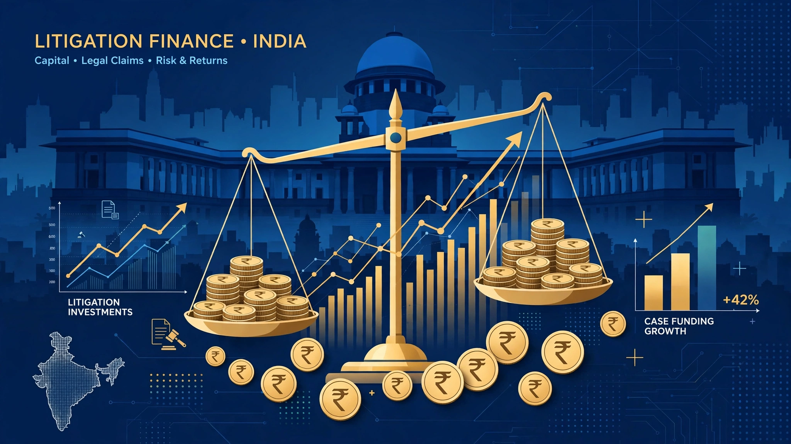
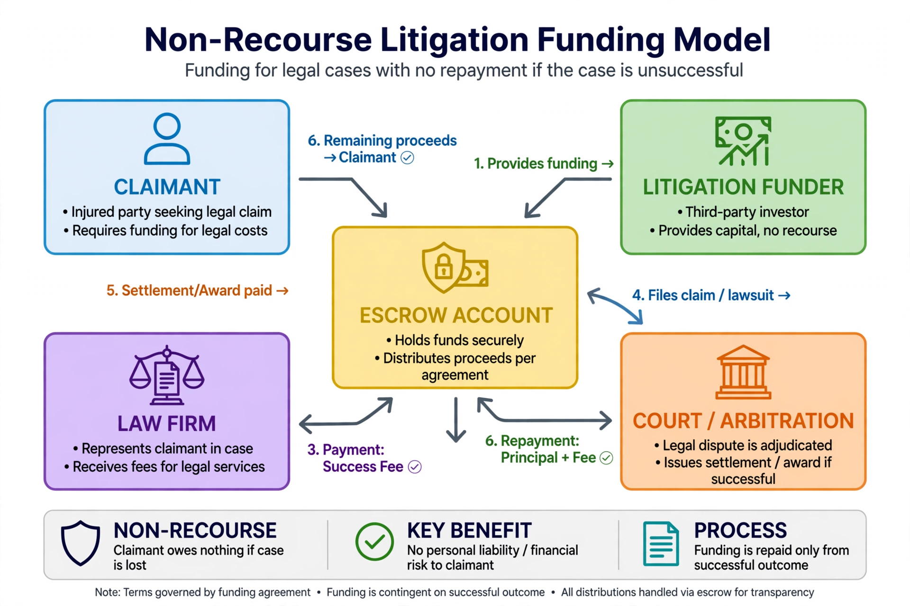
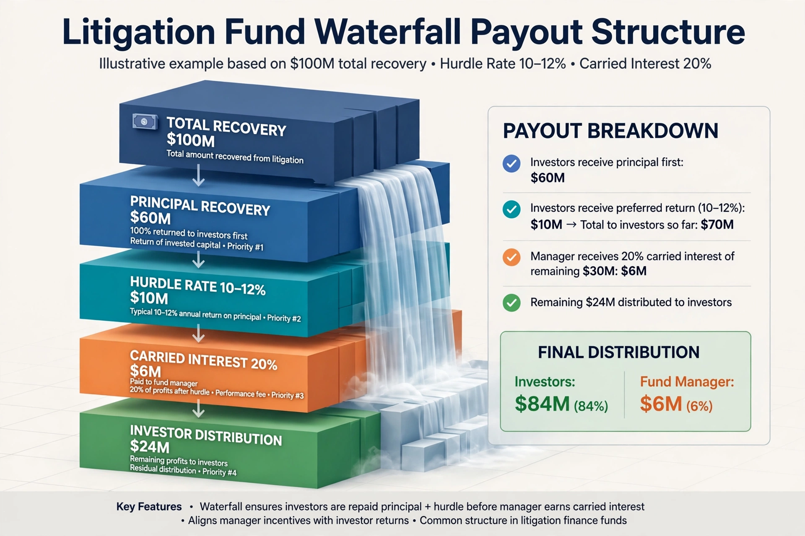

Institutional Litigation Finance in India: A Comprehensive Guide
TL;DR: Litigation finance turns a ₹100 Cr commercial lawsuit into an investable asset. A funder pays the legal bills (non-recourse). If you win, they take 20-50% of recovery; if you lose, they lose everything. In India, this is now done via SEBI-registered Category II AIFs with a ₹1 Cr minimum, pioneered by Five Rivers Capital and scaled by LegalPay. Returns are uncorrelated to markets, targeting 22-30% IRR.

1. What is Third-Party Litigation Funding (TPLF)?
Third-party litigation funding is an alternative finance mechanism where an outside investor, not a lawyer, finances the cost of pursuing a legal claim in return for a share of the eventual award.
The core proposition:
- Claimant has a strong ₹100 Cr claim but needs ₹5 Cr for arbitrators, counsel, experts
- Instead of burning working capital, claimant approaches a funder
- Funder does 3-point diligence: legal merit, quantum, asset rating (can defendant actually pay?)
- If funded: funder pays costs + sometimes upfront capital. Contract is non-recourse - claimant owes nothing if case fails.
How industry defines it
"Think of it as someone else paying for your fight in court. A financier picks up the legal bills, and if you win, they take a slice of the recovery — if you lose, they eat the cost." — Sameer Jain, PSL Advocates, quoted in Business Standard.
This model has scaled globally - in the US, 346 commercial funding deals worth $2.8B were signed in 2025 alone per Westfleet Advisors. India is now at the early institutional stage with at least three active entities: Five Rivers (AIF), LegalPay, and Singapore-based ELF Partners.
1.1 Why It Matters Now
- 45M+ cases pending in Indian courts (NJDG 2024)
- 7,567 companies under IBC administration till March 2024
- EPC, infra, real estate, and logistics disputes dominate TPLF evaluation pipelines
- Government is examining TPLF for insolvency-related avoidance claims
2. Is It Legal in India? The Regulatory Puzzle
2.1 No Prohibition, No Dedicated Statute
India has no central statute that prohibits or specifically regulates third-party litigation funding. Instead, legality flows from judicial precedent and procedural amendments.
Key milestones:
| Year | Event | Impact |
|---|---|---|
| 2018 | Bar Council of India v. A.K. Balaji (2018) 5 SCC 379 | Supreme Court held: "There appears to be no restriction on third parties (non-lawyers) funding the litigation and getting repaid after the outcome of the litigation." Only lawyers funding their own clients is barred. |
| 2017-2020 | State amendments to Order XXV CPC (Maharashtra, Gujarat, UP, MP) | Courts can implead funders as parties and seek security for costs |
| 2023 | Tomorrow Sales Agency v. SBS Holdings, Delhi High Court | Court held arbitral award cannot be enforced against non-party funder; stressed need for transparency and non-exploitative terms. Funder liability is limited. |
| 2024-25 | MCA Insolvency Law Committee | Concluded no legal bar to TPLF in pursuing IBC claims |
Legality Summary
- Lawyers cannot fund their own clients (BCI Rules)
- Non-lawyers can fund - no restriction
- Funding agreement must not be extortionate, unconscionable or against public policy
- Disclosure and control issues remain grey - funding agreements are critical
Sources: Business Standard courtroom-to-capital analysis, Mint industry overview, SCC Times analysis of A.K. Balaji.
flowchart TD
A[Claimant has ₹50-100Cr commercial claim] --> B{Is there a funding agreement?}
B -->|Yes, non-lawyers| C[Permitted per Bar Council v AK Balaji 2018]
B -->|Lawyer funding client| D[Prohibited under BCI Rules]
C --> E[State CPC Amendments allow funder to be added for security for costs]
C --> F[Tomorrow Sales 2023: Funder not party to arbitration = not liable for adverse costs]
E --> G[Funding Agreement must define: control, settlement rights, returns, disclosure]3. How Individuals Can Invest: Two Structural Routes
3.1 The Institutional Route - SEBI Category II AIF (HNI Only)
This is the only SEBI-regulated wrapper for litigation finance in India.
- Vehicle: SEBI (Alternative Investment Funds) Regulations, 2012 - Category II AIF (same bucket as PE, distressed assets)
- Minimum ticket: ₹1 Crore per investor - mandated for all AIFs
- Tenure: Close-ended, 3-6 years matching litigation cycles
- Drawdowns: Commitment model - you sign ₹1 Cr commitment, manager calls capital over 2-4 years via drawdown notices as cases are underwritten
- Fees: 1.5-2% management fee + 20% carry (typical PE structure)
- Liquidity: No redemption. Exit only on case resolution.

Who can invest?
Resident Indians, NRIs, and FPIs through Private Placement Memorandum (PPM). LegalPay notes its platform charges 2% management fee and 20% carry for transactions made on platform.
3.2 The Fractional / NBFC / Platform Route
For smaller tickets, fintech platforms historically used SPVs or NBFC lending:
- LegalPay via Padmalaya Finserve NBFC: Targeting ₹200 Cr disbursement in 2024, funding CIRP of Lavasa, Yashomati Hospitals, Wadhwa Buildcon
- Ticket size: ₹25k-₹50k via syndicated pools (not AIF, but contractual SPV)
- Product: Interim finance for insolvency + litigation funding, 12-18 month loans at 18-25% pre-tax interest for interim finance, higher for pure litigation
- Other players: LitiCap, LegalFund, FightRight - focusing on arbitration where claims are crystallised
Regulatory note
Only Five Rivers is publicly cited as India's only SEBI-registered dedicated legal finance AIF as of 2025. Others operate as tech platforms, corporate aggregators, or private networks often without AIF oversight.
4. Key Players - India's Early Institutional Map
4.1 Five Rivers Capital & River Investments Group
- Base: Mumbai-based AIF manager, CIN U67100DL2021PTC389861, incorporated Nov 2021
- Claim: Positions itself as first dedicated litigation finance fund in India
- Fund size: In talks to close $25-50 million (₹200-400 Cr) first fund, per MD Irfan Mughal (ex-Debevoise, Quinn Emanuel, NY-qualified lawyer)
- Strategy: $1-12M per case (including costs + upfront to claimant), commercial arbitration, cross-border disputes, focus on defendants with liquidable assets
- Team: Meghna Rajadhyaksha (ex-SAM & Co Partner) heads legal analysis
- Model: Quantitative analysis for returns, diversified portfolio approach
Returns on successful cases are expected to be around 50-70% IRR, but with losses, portfolio targeting 30%+ returns - Irfan Mughal, Five Rivers.
4.2 LegalPay
- Base: New Delhi, founded 2019 by Kundan Shahi
- Scale: Claims ₹100 Cr+ deployed across disputes
- Tech: AI-driven underwriting - pre-screening court histories, win probability, settlement timelines
- Focus: Claims ₹5 Cr and above, plaintiff side primarily, now funding defendants selectively
- Returns:
- Average expected timeline 36 months
- Average IRR 22-27% per case, 12-15% average return
- Interim finance exit: 23% IRR (Gurgaon real estate case, 2024)
- Platform marketing: minimum 30% IRRs across stages
4.3 ELF Partners (Singapore)
Litigation finance consultancy connecting VCs and HNIs to disputes on case-by-case basis. Evaluates on legal merit, viable quantum, asset rating. Says payout can be 200-300% over 4-5 years.
graph TD
subgraph Sourcing
A[EPC Contractors]
B[Real Estate Developers]
C[MSMEs vs Conglomerates]
D[Insolvency - Avoidance Claims]
end
Sourcing --> E[Due Diligence & AI Vetting<br/>Merit >70%<br/>Defendant Creditworthy]
E --> F{Underwrite?}
F -->|No| G[Reject ~90% cases]
F -->|Yes| H[TPF Agreement<br/>Non-Recourse<br/>20-50% recovery share]
H --> I[Deployment<br/>Counsel + Tribunal + Experts]
I --> J[Resolution<br/>Award / Settlement]
J --> K[Escrow & Waterfall<br/>Principal -> Hurdle -> Carry -> LP]5. How Litigation Funding Companies Operate & Profit
5.1 The Operating Engine
- Case Sourcing: Inbound from law firms, insolvency professionals, direct. EPC, infra, manufacturing, logistics, media are hot sectors.
- Vetting: Internal legal committee + data analytics. Check: contract enforceability, evidence trail, limitation, jurisdiction, defendant assets.
- Exclusions: Mass torts, matrimonial, criminal, speculative public interest litigation - universally excluded.
- Funding Agreement: Defines control - who decides settlement? Typically claimant retains control, funder has veto/consultation rights on settlements below threshold.
- Deployment: Fund pays lawyers, arbitrators, experts directly; sometimes provides working capital advance to claimant.

5.2 The Profit Engine
- Revenue cut: 20% to 50% of gross recovered cash upon success
- Management fees: 1.5-2% p.a. on committed capital
- Security: Sometimes structured against clear-title property, or fixed multiple (e.g., 2x return), or success-linked percentage
Example: ₹5 Cr claim, ₹60L funding, 30% recovery share on ₹6 Cr award = Fund gets ₹1.8 Cr + ₹60L principal = ₹2.4 Cr (4x in ~2 years).
6. Financial Performance & The Uncorrelated Return Thesis
6.1 Why Investors Care: Zero Market Beta
Litigation returns are uncorrelated to Nifty, interest rates, or macro cycles. A commercial breach is valid irrespective of market crash. This makes it an attractive alternative sleeve for family offices.
6.2 Payout Architecture - The Waterfall
Standard Category II AIF waterfall (illustrative for ₹100M recovery):
flowchart TB
R[Total Recovery $100M] --> P[1. Principal Recovery<br/>$60M -> Investors<br/>100% of costs]
P --> H[2. Preferred Return / Hurdle<br/>$10M @ 10-12% -> Investors]
H --> C[3. Catch-up & Carry<br/>$6M = 20% of remaining $30M -> Manager]
C --> D[4. Residual<br/>$24M -> Investors Pro-rata]
style P fill:#1e40af,color:#fff
style H fill:#0e7490,color:#fff
style C fill:#c2410c,color:#fff
style D fill:#15803d,color:#fffIn practice:
- Target Gross IRR: 12-18% modelled for diversified AIF
- Realized Net IRR: LegalPay interim finance 23%, full fund 27% reported; Five Rivers targeting 30%+ portfolio IRR despite 50-70% case-level IRR expectation
- Risk: Non-recourse means binary loss - case lost = 100% capital loss on that case. Diversification across 10-15 cases is critical.
| Metric | Interim Insolvency Finance | Pure Litigation / Arbitration |
|---|---|---|
| Tenure | 12-18 months | 24-48 months |
| Risk | Moderate (secured, court-supervised) | High (binary, appeal risk) |
| Target IRR | 18-25% pre-tax | 22-30%+ |
| Payout Multiple | 1.2x - 1.5x | 2x - 3x+ |
7. The Role and Scope of SEBI
7.1 SEBI Doesn't Regulate Lawsuits - It Regulates the Money Pool
SEBI's mandate under AIF Regulations, 2012 covers:
- How funds raise capital (PPM, fair treatment of investors - Dec 2024 circular: equal rights on undrawn commitments)
- NAV calculation, quarterly reporting, portfolio valuation
- Due diligence to prevent circumvention of laws (April 2024 amendment to Reg 20)
- Dematerialization: From July 1, 2025, all new AIF investments must be in demat; pre-July investments to be dematted by Oct 31, 2025
SEBI does NOT regulate champerty, settlement control, or advocate conduct - that's judiciary + Bar Council.
7.2 New 2025-26 Framework - Lifeline for Litigation Funds
Because litigation can outlive a fund's 5-year tenure, SEBI issued game-changing circulars in June 2026:
Retention of liquidation proceeds beyond fund life allowed if:
- Receipt of litigation notice / tax / regulatory demand
- 75% investor consent by value for anticipated liabilities
- Documented residual winding-up expenses (capped 3 years)
New 'Inoperative Fund' status:
- Eligible AIFs that liquidated all investments but hold cash due to litigation can apply
- Benefits: Exempt from quarterly activity updates, portfolio valuation audits, custodian requirements, investment team certifications
- Restrictions: No new scheme launch, no management fees
This directly benefits litigation AIFs - previously they were forced into compliance defaults while waiting for court enforcement.
Minimum AIF investment of ₹1 Crore remains - positioning this asset class for HNI/UHNI.
8. Risks for Investors & Claimants
Key Risks to Underwrite
1. Case loss = Total loss - Non-recourse means funder bears 100% loss. Tomorrow Sales funding agreement explicitly contemplated this.
2. Win ≠ Collection - Need to diligence defendant's ability to pay. Award enforcement in India can take years.
3. Capital lock-up - No predictable maturity like a bond. Could be 12 months or 5 years.
4. Control & Conflicts - Claimant may want quick ₹40 Cr settlement for cash flow; funder may want to push for ₹100 Cr award. Agreement must define settlement authority.
5. Regulatory change - No comprehensive statute. Disclosure, security for costs, funder control remain evolving areas per Delhi HC and Parliamentary committee.
quadrantChart
title Risk vs Return Matrix - Litigation Finance India
x-axis Low Return --> High Return
y-axis Low Risk --> High Risk
quadrant-1 High Risk / High Return
quadrant-2 Low Risk / High Return
quadrant-3 Low Risk / Low Return
quadrant-4 High Risk / Low Risk
"Fixed Deposit": [0.2, 0.1]
"Interim Finance (IBC)": [0.55, 0.45]
"Diversified AIF Portfolio": [0.7, 0.65]
"Single Arbitration Bet": [0.85, 0.9]
"Nifty 50": [0.4, 0.5]9. Practical Execution Case Study - Recovery of Margins
The Profile
- Claimant: Mid-sized MSME - auto component manufacturer (Tier-2)
- Defendant: Tier-1 automotive conglomerate
- Dispute: Abrupt cancellation of long-term supply agreement without notice; withholding ₹5 Cr in invoices + inventory margins citing "quality variance"
- Claim value: ₹6 Cr with interest
The Problem
MSME had airtight PO, delivery receipts, QC reports. But arbitration cost estimate: ₹60 Lakhs for SIAC filing, senior counsel, tribunal fees, experts. MSME couldn't lock working capital for 24-36 months.
The Fund's Participation
-
Due Diligence (LegalPay-style):
- AI screen: Purchase orders + GRNs + email trails = 85% win probability
- Asset rating: Conglomerate has ₹2,000 Cr+ assets, clear ability to pay
- Timeline modelled: 24-30 months
-
Structure:
- Non-recourse TPF agreement signed
- Fund pays ₹60L directly to counsel/tribunal via escrow
- Return: 30% of gross recovery + principal
-
Outcome:
- Tribunal ruled in favour of MSME, awarded ₹6 Cr (invoices + 12% interest)
- Proceeds routed via controlled escrow per waterfall
Distribution:
| Tranche | Amount | Recipient |
|---|---|---|
| Principal Recovery | ₹60L | Fund |
| Contingency (30% of ₹6Cr) | ₹1.8 Cr | Fund |
| Net to MSME | ₹3.6 Cr | Claimant |
MSME unlocked ₹3.6 Cr without risking insolvency; fund made 3x in <3 years on that case (~44% IRR), offsetting other portfolio losses.
What made this fundable?
Crystallised quantum (invoices), documentary evidence, defendant solvency, and domestic arbitration (faster than civil suit). Exactly what MDP & Partners notes: "Litigation funding startups are largely looking at arbitration cases where the claims are crystallised."
10. Future Outlook - Where is Indian Litigation Finance Headed?
Short term (2026-27):
- SEBI's Inoperative Fund framework removes biggest operational bottleneck - expect 2-3 more AIFs to file
- IBC amendment to explicitly allow funding of avoidance transactions (undervalue, preferential) - huge market
- Self-regulation via Indian Association for Litigation Finance (IALF) pushing ethical standards
Medium term:
- Disclosure norms: Courts may require parties to disclose funding arrangement (as UK does)
- Security for costs: Arbitration Act amendment may allow arbitrators to order funders to provide security even if not party
- Institutional LP appetite: Family offices currently dominate; insurance, endowments may enter via Category II AIFs once track record builds
"Litigation funding in India is in an innovative early phase that is unregulated by statute but governed by contract and precedent... Moving ahead, India should aim for a balanced regulatory regime to protect consumers and inspire investor confidence." - Neeha Nagpal, NM Law Chambers.
11. Investor Checklist
If you are a ₹1 Cr+ investor evaluating a litigation AIF:
[ ] Is it SEBI-registered Category II? Check SEBI AIF disclosure [ ] Case diversification: How many cases? Single case fund = concentrated risk [ ] Underwriting team: Ex-litigators? Data analytics? [ ] Asset rating: Do defendants have ability to pay? [ ] Waterfall & fees: 2/20 standard? Hurdle rate? [ ] Settlement control: Who decides? What if claimant wants early settlement? [ ] Enforcement: Experience in executing awards? [ ] Inoperative status: Does PPM mention SEBI's new retention framework?
Sources & Further Reading
This blog synthesizes public reporting and regulatory sources - verified September 2026:
- Business Standard - From courtrooms to capital (Sept 2026) - Defines TPF non-recourse structure, legality via AK Balaji, Tomorrow Sales case, market players Five Rivers/LegalPay/ELF, risks. business-standard.com
- Mint - Can lawsuits become an asset class? (May 2025) - Five Rivers $25-50M first dedicated fund, ₹1 Cr AIF minimum, 50-70% case IRR targeting 30% portfolio, three parameters: legal merit/quantum/asset rating. livemint.com
- Economic Times - Litigation funding startups eyeing arbitration (July 2024) - LegalPay CEO Kundan Shahi: 22-27% IRR, 36-month timeline; NBFC Padmalaya Finserve ₹200 Cr target; 45M pending cases. economictimes.indiatimes.com
- Economic Times - LegalPay exit with 23% IRR - Interim finance exit benchmark. economictimes.indiatimes.com
- Financial Express - Who's funding India's lawsuits? - Notes India has only one SEBI-registered dedicated litigation AIF - Five Rivers Capital Fund I. financialexpress.com
- Outlook Money - SEBI AIF liquidation & Inoperative Fund (June 2026) - Retention beyond fund life on litigation notice, 75% consent, 3-year cap; no management fees under inoperative status; ₹1 Cr minimum. outlookmoney.com
- SEBI Circulars (June 2026) - Framework for retention of liquidation proceeds and inoperative fund designation.
- Bar Council of India v. A.K. Balaji (2018) 5 SCC 379 - Supreme Court precedent on TPF permissibility.
- Tomorrow Sales Agency v. SBS Holdings (Delhi HC, 2023) - Non-party funder cannot be enforced against; transparency guidance.
- LegalEra, Lexology, SCC Times - Analysis of champerty, Order XXV CPC amendments.
Built for institutional investors, family offices, and founders navigating commercial disputes. This is not legal advice - consult SEBI-registered AIF disclosure documents and independent counsel.